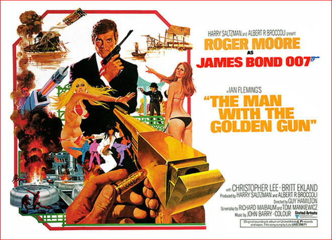
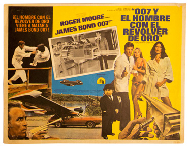
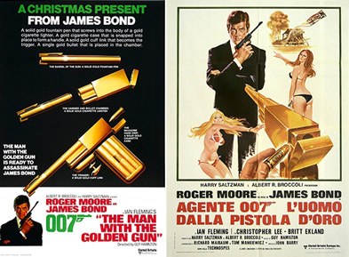
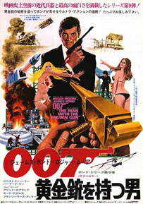
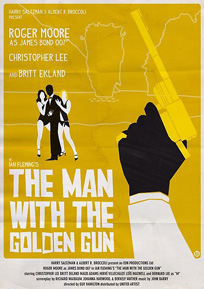
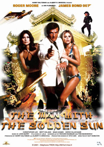
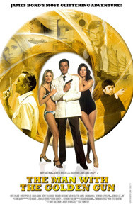
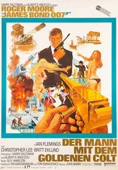
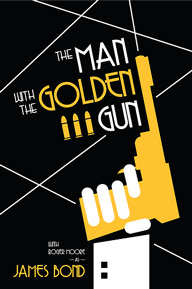

Harry Saltzman
Richard Maibaum
Tom Mankiewicz
Oswald Morris
John Shirley
Françoise Therry
Chan Yiu Lam
In London, a golden bullet with James Bond's code "007" etched into its surface is received by MI6. It is believed that it was sent by the famed assassin Francisco Scaramanga, who uses a golden gun, to intimidate the agent. Because of the perceived threat to the agent's life, M relieves Bond of a mission revolving around the work of the solar energy scientist named Gibson, thought to be in possession of information crucial to solving the energy crisis with solar power. Bond sets out unofficially to locate Scaramanga.
After retrieving a spent golden bullet from a belly dancer in Beirut and tracking its manufacturer to Macau, Bond encounters Andrea Anders, Scaramanga's mistress, collecting the shipment of golden bullets at a casino. Bond follows her to Hong Kong and, in her Peninsula Hotel room, pressures Anders to expose information about Scaramanga, his appearance and his plans; she directs him to the Bottoms Up Club. The club proves to be the location of Scaramanga's next hit, Gibson, from whom Scaramanga's dwarf henchman Nick Nack steals the "Solex Agitator", a key component of a solar power station. Before Bond can assert his innocence in Gibson's death, he is taken away by Lieutenant Hip and transported to meet M and Q in a hidden headquarters in the wreck of the RMS Queen Elizabeth in the harbour. M assigns Bond to retrieve the Solex.
Bond then travels to Bangkok to meet Hai Fat, a wealthy Siamese entrepreneur suspected of arranging Gibson's murder. Bond poses as Scaramanga but his plan backfires because, unbeknown to him, Scaramanga himself is operating at Hai Fat's estate. Bond is captured and placed in Fat's martial arts academy, where the students are instructed to kill him. After escaping with the aid of Hip and his nieces, Bond speeds away on a motorized sampan along the river and reunites with his assistant, Mary Goodnight. Scaramanga subsequently kills Hai Fat and assumes control of his empire, taking the Solex with him.
Anders visits Bond, revealing that she sent the bullet to London and wants Bond to kill Scaramanga. In payment, she promises to hand the Solex over to him at a Muay Thai venue the next day. At the match, Bond discovers Anders dead and meets Scaramanga. Bond observes the Solex on the floor and is able to smuggle it away to Hip, who passes it to Goodnight. When Goodnight attempts to place a homing device on Scaramanga's car, she becomes trapped in the trunk. Bond discovers Scaramanga driving off and steals an AMC showroom car to give chase, coincidentally with vacationing Sheriff J.W. Pepper seated within it. Bond and Pepper follow Scaramanga in a car chase across Bangkok, which concludes when Scaramanga's car transforms into a plane, which flies himself, Nick Nack and Goodnight away from Bond.
Picking up Goodnight's tracking signal, Bond flies a seaplane into Red Chinese waters and lands at Scaramanga's island. Scaramanga welcomes and shows Bond the solar power plant operation that he has taken over, the technology for which he intends to sell to the highest bidder. While demonstrating the equipment, Scaramanga uses a powerful energy beam to destroy Bond's plane.
Scaramanga then proposes a pistol duel with Bond on the beach; the two men stand back to back and are officiated by Nick Nack to take twenty paces, but when Bond turns and fires, Scaramanga has vanished. Nick Nack leads Bond into Scaramanga's Funhouse where Bond stands in the place of a mannequin of himself; when Scaramanga walks by, Bond outwits and kills him. Goodnight kills Scaramanga's security chief Kra, sending his body into one of the temperature control vats. His body heat raises the helium of the solar plant, which begins to spiral out of control. Bond retrieves the Solex unit just before the island is destroyed, and they escape unharmed in Scaramanga's Chinese junk. Bond then fends off a final attack by Nick Nack, who smuggled himself aboard, placing Nick Nack in a wicker basket on the mainmast of the ship. Bond and Goodnight celebrate their mission by romancing each other.
Originally, the role of Scaramanga was offered to Jack Palance, but he turned the opportunity down. Christopher Lee, who was eventually chosen to portray Scaramanga, was Ian Fleming's step-cousin and Fleming had suggested Lee for the role of Dr. Julius No in the 1962 series opener Dr. No. Lee noted that Fleming was a forgetful man and by the time he mentioned this to Broccoli and Saltzman they had cast Joseph Wiseman in the part. Due to filming on location in Bangkok, his role in the film affected Lee's work the following year, as director Ken Russell was unable to sign Lee to play the Specialist in the 1975 film Tommy, a part eventually given to Jack Nicholson.
Two Swedish models were cast as the Bond girls, Britt Ekland and Maud Adams. Ekland had previously been married to Peter Sellers, who appeared in the 1967 spoof Bond film Casino Royal, and had been interested in playing a Bond girl since she had seen Dr. No, and contacted the producers about the main role of Mary Goodnight. Hamilton met Adams in New York, and cast her because "she was elegant and beautiful that it seemed to me she was the perfect Bond girl". When Ekland read the news that Adams had been cast for The Man with the Golden Gun, she became upset, thinking Adams had been selected to play Goodnight. Broccoli then called Ekland to invite her for the main role as, after seeing her in a film, he thought Ekland's "generous looks" made her a good contrast to Adams. Hamilton decided to put Marc Lawrence, whom he had worked with on Diamonds Are Forever, to play a gangster shot dead by Scaramanga at the start of the film, because he found it an interesting idea to "put sort of a Chicago gangster in the middle of Thailand".
Filming commenced on 6 November 1973 at the partly submerged wreck of the RMS Queen Elizabeth, which acted as a top-secret MI6 base grounded in Victoria Harbour in Hong Kong. The crew was small, and a stunt double was used for James Bond. Other Hong Kong locations included the Hong Kong Dragon Garden as the estate of Hai Fat, which portrayed a location in Bangkok. The major part of principal photography began on 18 April 1974 in Thailand. Thai locations included Bangkok, Thon Buri, Phuket and the nearby Phang Nga Province, on the islands of Ko Khao Phing Kan and Ko Tapu Scaramanga's hideout is on Ko Khao Phing Kan, and Ko Tapu is often now referred to as James Bond Island both by locals and in tourist guidebooks. The scene during the boxing match used an actual Muay Thai fixture at the Lumpinee Boxing Stadium.
Production returned in late April to Hong Kong, and also to Macau, for that island is famous for its casinos, which Hong Kong lacks. Some scenes in Thailand had to be finished, and production had to move to studio work in Pinewood Studios; this included sets such as Scaramanga's solar energy plant and island interior. Academy Award winner Oswald Morris was hired to finish the job after cinematographer Ted Moore became ill. Morris was initially reluctant, as he did not like his previous experiences taking over other cinematographers' work, but accepted after dining with Broccoli. Production wrapped in Pinewood in August 1974.
One of the main stunts in the film consisted of stunt driver "Bumps" Willard (as James Bond) driving an AMC Hornet leaping a broken bridge and spinning around 360 degrees in mid-air about the longitudinal axis, doing an "aerial twist"; Willard successfully completed the jump on the first take. The stunt was shown in slow motion, for the scene was otherwise too fast. Composer John Barry added a slide whistle sound effect over the stunt, which Broccoli kept in despite thinking that it "undercouped the stunt". Barry later regretted his decision, thinking the whistle "broke the golden rule" as the stunt was "for what it was all worth, a truly dangerous moment, ... true James Bond style". The sound effect was described as "simply crass". The writer Jim Smith suggested that the stunt "brings into focus the lack of excitement in the rest of the film and is spoilt by the use of 'comedy' sound effects." Eon Productions had licensed the stunt, which had been designed by Raymond McHenry. It was initially conceived at Cornell Aeronautical Laboratory (CAL) in Buffalo, New York as a test for their vehicle simulation software. After development in simulation, ramps were built and the stunt was tested at CAL's proving ground. It toured as part of the All American Thrill Show as the Astro Spiral before it was picked up for the film. The television programme Top Gear attempted to repeat the stunt in June 2008, but failed. The scene where Scaramanga's Matador flies was shot at Bovington Camp, with a model inspired by an actual car plane prototype. Bond's duel with Scaramanga, which Mankewicz said was inspired by the climactic faceoff in Shane, was shortened as the producers felt it was causing pacing problems. The trailers featured some of the cut scenes.
Hamilton adapted an idea of his involving Bond in Disneyland for Scaramanga's funhouse. The funhouse was designed to be a place where Scaramanga could get the upper hand by distracting the adversary with obstacles and was described by Murton as a "melting pot of ideas" which made it "both a funhouse and a horror house". While an actual wax figure of Roger Moore was used, Moore's stunt double Les Crawford was the cowboy figure, and Ray Marione played the Al Capone figure. The canted sets such as the funhouse and the Queen Elizabeth had inspiration from German Expressionism films such as The Cabinet of Dr. Caligari. For Scaramanga's solar power plant, Hamilton used both the Pinewood set and a miniature projected by Derek Meddings, often cutting between each other to show there was no discernible difference. The destruction of the facility was a combination of practical effects on the set and a destruction of the miniature. Meddings based the island blowing up on footage of the Battle of Monte Cassino.







